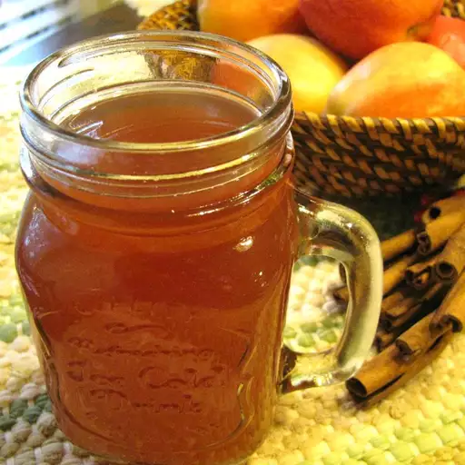

Hot Spiked Cider

This spiked cider recipe adds rum
to the classic cold-weather beverage
It's great for fall or holiday gatherings. It can be made in large
quantities and kept warm in an electric coffee server.
Ingredients
- 1 quart water
- 3 orange spice tea bags
- 2 cups apple cider
- 1 1/2 cups light rum
- 1/2 cup brown sugar
- 2 cinnamon sticks
- 3 teaspoons butter
- 6 cinnamon sticks, garnish
Directions
- Pour water into a large saucepan and bring to a boil.
- Remove from heat and add orange spice tea bags. Cover and let steep for 5
minutes.
- Remove tea bags and stir in apple cider, rum, brown sugar, and 2 cinnamon sticks.
Heat cider over medium-low heat until just steaming.
- Ladle hot cider into 6 mugs and drop 1/2 teaspoon butter into each.
Garnish with a cinnamon "swizzle" stick.